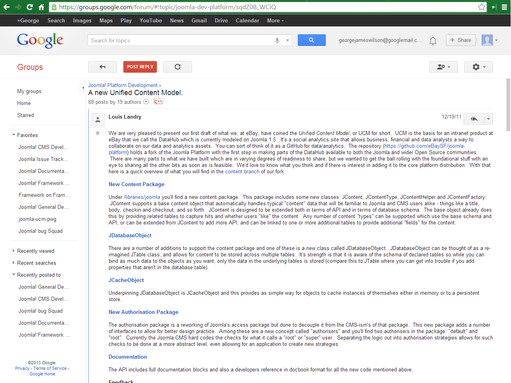
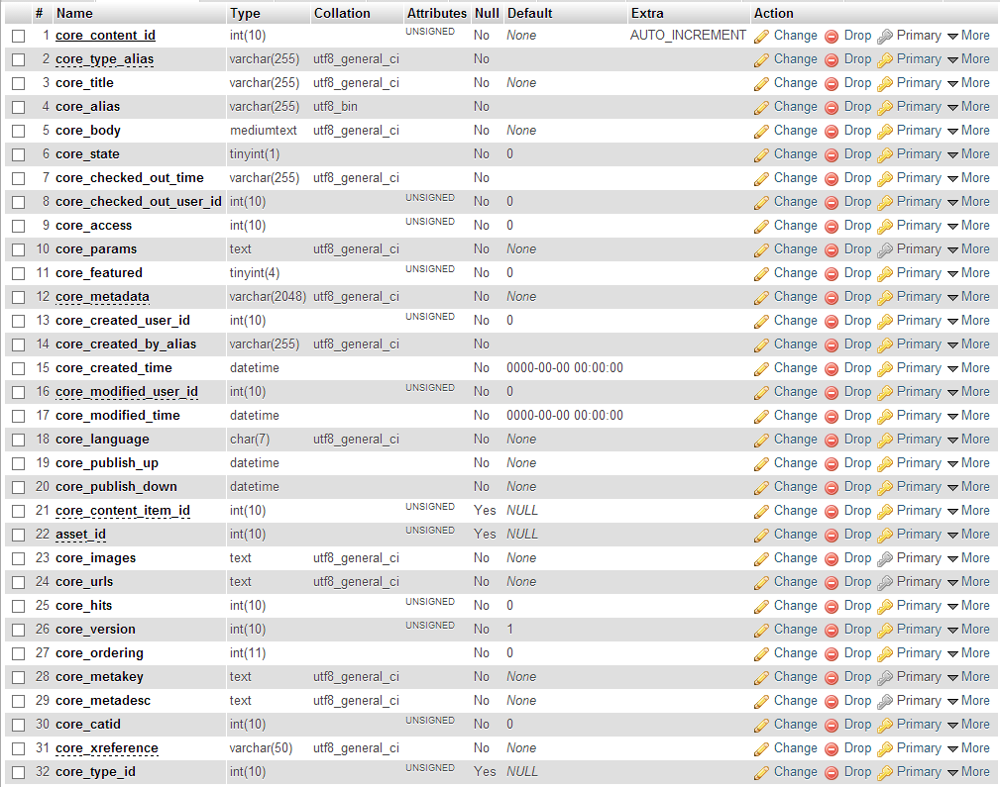
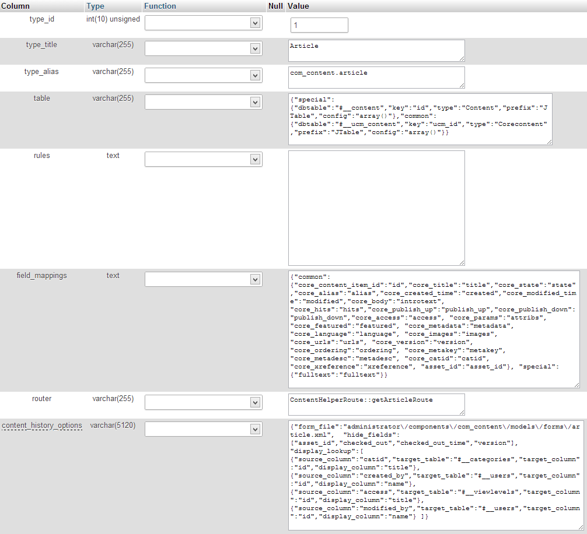

Joomla 3.2 and Beyond
Looking at what lies ahead for Joomla!
By George Wilson / @GW1992
Who am I?

- Student - Specialising in drinking, with a minor in physics
- Website Enthusiast
- Developing extensions for Joomla! for the last 3 years
- Contributing to the Joomla Docs for the last 1.5 years
- Contributing to core for the last 1 year
- Play the saxophone
What are we going to talk about for the next hour?
- Joomla! 3.2
- How the Joomla! Framework will impact the CMS
- com_ajax
- Content Versioning
- The Joomla! App* Store
- Other behind the scene features (TinyMCE 4, Form Fields, jQuery rebase etc.)
What are we going to talk about for the next hour?
- Joomla! 4.0
- UCM
- HMVC
The Framework and the CMS
Officially unconnected ...
BUT
Feature requests connected to packages in the framework are still requested to go through the framework first
Packages in Joomla are divided up the following way:
- Packages in the Joomla Framework: libraries/joomla
- Packages used in the CMS but not in the framework: libraries/cms
- Depracted packages in the CMS: libraries/legacy
Note this rearranging is an ongoing process but should be done well before 3.5
Joomla AJAX Component
Currently it's very hard to implement AJAX in a Joomla module or plugin without having to create a new entry point. Of course a new entry point is potentially vulnerable if coded badly.
Usage
$.ajax({
type: "POST",
url: "localhost/joomla32/index.php?option=com_ajax&module=foo&method=submit&format=json",
data: request,
success:function(response){
if (response.sucess)
{
// Create a success message. Maybe reset the form etc.
Joomla.renderMessages(Joomla.JText._('MOD_FOO_SUCCESS'));
}
else
{
// Create a error message
Joomla.renderMessages(Joomla.JText._('MOD_FOO_ERROR_IN_JS'));
}
Content Versioning
- Used to keep copies of articles/weblinks/contact (or any content items) in Joomla or any other third party component content if enabled
- Easy to implement in any component with only a handful of lines of code
Let's have a play about with it!
Behind the scenes
- This uses lots of the UCM API
- Wait didn't you just say UCM was coming to Joomla! 4?
- A basic UCM API was introduced by tags in Joomla 3.1 - we'll come back to this later
What is UCM
A Unified Content Model (UCM) was first introduced to the Joomla Platform in December 2011
What is UCM
It suggests content has the same basis and can be grouped together
For example the majority of content has a title, enabled state, checkin, created by dates etc.
Familiar Fields?
Content Types
Implementation of UCM
- A basic UCM API was introduced by tags in Joomla 3.1
- 3 Database tables - #__content_types, #__ucm_base, #__ucm_content) (only the first is being used currently)
- 3 classes contained in
libraries/cms/ucm
- Will be much expanded in Joomla 4.x
How can I use UCM?
Example of use as part of the ordering field in Joomla
$categoryId = (int) $this->form->getValue('catid');
$contentType = (string) $this->element['content_type'];
$ucmType = new JUcmType;
$ucmRow = $ucmType->getType($ucmType->getTypeId($contentType));
$db = JFactory::getDbo();
$query = $db->getQuery(true);
$query->select(array($db->quoteName(json_decode($ucmRow->field_mappings)->common->core_ordering, 'value'),
$db->quoteName(json_decode($ucmRow->field_mappings)->common->core_title, 'text')))
->from($db->quoteName(json_decode($ucmRow->table)->special->dbtable))
->where($db->quoteName('catid') . ' = ' . (int) $categoryId)
->order('ordering');
return $query;
Hierarchical model–view–controller (HMVC)
- Many of you are familiar with HMVC - however it breaks the DRY principle!!
- The principle of HMVC is that you can call the code from anywhere. Imagine calling your backend model in your frontend
- ... or in a module?
- This is actually already done in the RAD layer (Akeeba's FOF) - possibly mentioned in Paul Orwig's talk on this already
FOFDispatcher::getTmpInstance('com_foobar', 'items', array('input' => $input))->dispatch();Stop the Press!
Form Fields
Now support nearly all HTML5 attributes
Repeatable Form Fields
Allows users to input as many fields as desired
jQuery for JS
The majority of jQuery usage in Joomla 3.2 has been moved from Mootools to jQuery
TinyMCE 4
Update to TinyMCE 4. More mobile friendly.
Revamped Joomla Template Manager
Almost completely rewritten.
Time to wake up and interact now!
Feel free to ask any questions you want
I hope I've given plenty of reason's to say #jpositiv